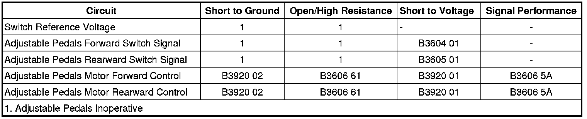

Adjustable Pedals Malfunction
Adjustable Pedals Malfunction
Diagnostic Instructions
* Perform the Diagnostic System Check - Vehicle (Initial Inspection and Diagnostic Overview) prior to using this diagnostic procedure.
* Review Strategy Based Diagnosis (Initial Inspection and Diagnostic Overview) for an overview of the diagnostic approach.
* Diagnostic Procedure Instructions (Initial Inspection and Diagnostic Overview)provides an overview of each diagnostic category.
Diagnostic Fault Information

Circuit/System Description
Battery voltage is supplied at all times to the adjustable pedal switch from the IGN SW fuse located in the underhood fuse block. When the pedal switch is operated to move the pedals forward, battery positive voltage is applied through the switch contacts and the adjustable pedal forward switch signal circuit to the memory seat module (MSM). In response to this signal, the MSM applies battery voltage through the adjustable pedal motor forward control circuit and ground through the adjustable pedal motor rearward control circuit to the motor. The motor runs to move the pedals forward until the switch is released. Moving the pedals rearward works similarly to moving the pedals forward, except that battery positive voltage and ground are applied on the opposite circuits causing the motor to run in the opposite direction.
Diagnostic Aids
The MSM may be referenced as the Driver Position Module.
Reference Information
Schematic Reference
Adjustable Pedal Schematics ([1][2]Electrical Diagrams)
Connector End View Reference
Component Connector End Views (Connector Views)
Description and Operation
Adjustable Pedals Description and Operation (Description and Operation)
Electrical Information Reference
* Circuit Testing (Component Tests and General Diagnostics)
* Connector Repairs (Component Tests and General Diagnostics)
* Testing for Intermittent Conditions and Poor Connections (Component Tests and General Diagnostics)
* Wiring Repairs (Component Tests and General Diagnostics)
Scan Tool Reference
Control Module References (Programming and Relearning)for scan tool information
Circuit/System Verification
Ignition ON, observe the scan tool adjustable pedal switch parameters while pressing and releasing the pedal switch in both directions. The reading should change between Inactive and Active for both directions.
Circuit/System Testing
Switch Circuit Test
1. Ignition OFF, disconnect the harness connector at the adjustable pedals switch.
2. Ignition ON, verify that a test lamp illuminates between the B+ circuit terminal C and ground.
• If the test lamp does not illuminate, test the B+ circuit for a short to ground or an open/high resistance. If the circuit tests normal, replace the memory seat module.
3. Install a 3A fused jumper wire between the inoperative switch signal circuit terminal and the B+ circuit terminal C. Verify the related scan tool Adjustable Pedal Switch parameter is Active.
• If not Active, test the signal circuit for an open/high resistance. If the circuit tests normal, replace the memory seat module.
4. If all circuits test normal, test or replace the adjustable pedal switch.
Component Testing
1. Ignition OFF, disconnect the harness connector at the adjustable pedal switch.
2. Test for infinite resistance between the signal terminal A and the B+ terminal C with the switch in the open position.
• If not the specified value, replace the adjustable pedal switch.
3. Test for less than 2 ohms of resistance between the signal terminal A and the B+ terminal C with the switch in the closed position.
• If greater than the specified range, replace the adjustable pedal switch.
4. Test for infinite resistance between the signal terminal B and the B+ terminal C with the switch in the open position.
• If not the specified value, replace the adjustable pedal switch.
5. Test for less than 2 ohms of resistance between the signal terminal B and the B+ terminal C with the switch in the closed position.
• If greater than the specified range, replace the adjustable pedal switch.
Repair Instructions
Perform the Diagnostic Repair Verification (Verification Tests) after completing the diagnostic procedure.
* Brake and Accelerator Pedal Adjuster Switch Replacement (Service and Repair)
* Brake and Accelerator Pedal Adjuster Actuator Motor Replacement (LHD) (Brake and Accelerator Pedal Adjuster Actuator Motor Replacement (LHD))Brake and Accelerator Pedal Adjuster Actuator Motor Replacement (RHD) (Brake and Accelerator Pedal Adjuster Actuator Motor Replacement (RHD))
* Control Module References (Programming and Relearning)for the memory seat module replacement and setup procedures